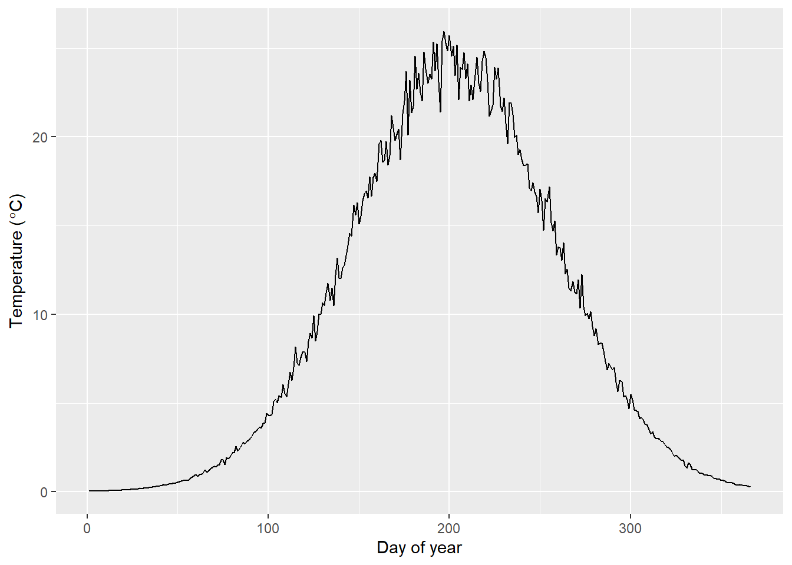

androscogginRiverModel()
The purpose of this page is to provide a general overview of the Androscoggin River dam passage performance standard model for American shad and blueback herring. If you are looking for examples, please check the examples page.
The Androscoggin River Model includes American shad and blueback herring habitat from Brunswick Dam at head of tide to Bisco Falls in the Little Androscoggin and Sabattus Pond in the Sabattus River.
Projects that can be assessed in the Androscoggin and Little Androscoggin Rivers include Brunswick, Pejepscot, Worumbo, Lower Baker, Upper Baker, Littlefield (breached), Hackett’s Mills, Mechanics Falls (Marcal), Welchville, and South Paris. Farwell and Fortier dams can each be assessed within the Sabattus River. The probability that fish use the mainstem or the Sabattus River can be specified by the user, and default value is based on proportion of habitat in each of the migration routes.
The river is split into two migratory routes at the confluence of the Androscoggin River and the Sabattus River. A total of 12 production units (PUs) are delineated based on dam locations in each route. The mainstem route includes PUs 1A, through 10A. The Sabattus River route includes PUs 1A - 3A, and 4B-5B. Abundances and carrying capacities are evaluated collectively in any shared PUs after the upstream migration model runs each year.
Carrying capacity in the Androscoggin River is based on number of adult spawners per unit surface area of habitat, an approach that is widely used for New England Rivers, but that is also highly uncertain. As in other applications, we assume a carrying capacity of about 100 fish per acre (or 200 fish per ha) for American shad, and 484 fish per acre for blueback herring (based on counts in the Sebasticook River, ME, USA). Because of the uncertainty associated with these values here and elsewhere, this value is drawn from a distribution of values so sensitivity to assumptions can be assessed by users.
Historical temperature data are compiled from various locations in the Androscoggin River watershed 2009-2018 by the Maine Department of Marine Resources, Pennsylvania State University and others who provided public data through the SHEDS Stream Temperature Database. Briefly, these sources include a total of 28 monitoring sites throughout the watershed. These data are used to simulate new daily temperatures using the simTemperature() function in shadia, for example:
library(shadia)
library(ggplot2)
# Simulate new temperatures for a single year
newT <- simTemperature(setUpTemperatureData(river = "androscoggin"))
# Plot the result
ggplot(newT, aes(x = day, y = val)) +
geom_line() +
ylab(expression(paste('Temperature (', degree, 'C)'))) +
xlab("Day of year")
See ?shadia::tempData_androscoggin in R for more information about the historical temperature data set for this system. Information about simulating new temperatures from existing data can be accessed by typing ?simTemperature and running in R.
The majority of biological data and behavioral processes in shadia are conserved between systems to standardize the approach. Others are seeded initially and are derived from model observations as emergent patterns thereafter. However, each river system requires some river-specific biological data including maximum age, starting population sizes, and membership in life-history based ‘regions’ used to parameterize size at age and marine survival rates from coastal stock assessments.
The maximum age used for simulation in the Androscoggin River is age 13 based on observed fish ages in other New England Rivers. Growth and marine survival inputs are parameterized using estimates for “Northern iteroparous” populations from Atlantic States Marine Fisheries Commission (ASMFC) 2020 American shad stock assessment. Growth and mortality are both projected from parameters of a von Bertalanffy growth function (VBGF) that includes effects of sea surface temperature on parameters L\(\infty\) and K. Marine survival and growth parameters are projected under RCP8.5 for this system using SST from the Northeast Continental Shelf Large Marine Ecosystem (Gilligan et al. In Press).
Some species-specific data were used in parameterizing blueback herring models, although the majority of movement dynamics are the same as for American shad provided that 1) previously implemented dynamics were based on body lengths per second, and 2) similar data for blueback herring are currently lacking.
Species-specific life-history inputs from blueback herring from the Kennebec River, co-located within the Merrymeeting Bay watershed, are used for this model. These inputs include maximum age, cumulative probability of recruitment to first spawn, probability of repeat spawning, length-at-age and von Bertalanffy growth parameter estimates, and natural mortality estimates.
Maximum age reported by Maine Department of Marine Resources (MEDMR, unpublished data) was 7 years.
Cumulative probability of recruitment to first spawn from the same data set were 0, 0.01, 0.48, 0.90, 1, 1, 1 for ages 1 - 7.
Probabilty of being a repeat spawner at age was parameterized for ages 1-7 as: 0, 0, 0.004, 0.28, 0.83, 1, 1.
Parameters of the von Bertalanffy growth function (VBGF) were estimated from age and length data provided by MEDMR. Three VBGFs were fit using Bayesian hierarchical models in Stan software using Rstan. These included sex-aggregate, male-only, and female-only models. The full posteriors for log-scale parameters Linf, K, and t0 are stored in vbgf_kennebec_bbh_agg, vbgf_kennebec_bbh_m, and vbgf_kennebec_bbh_f. A description of the estimates can be accessed in R by typing ?vbgf_kennebec_bbh_... in the console and running, where ... should be replaced by agg, m, or f. Sex-specific lengths of simulated fish are drawn for each fish in each year by sampling one set of correlated VBGF parameters from the appropriate posterior to incorporate these correlations and avoid nonsensical pairing of simulated VBGF parameters.
Natural mortality (M) is estimated on a per-simulation basis (not per-year) from the sex-aggregated VBGF parameters using the modification of Pauly (1980) recommended by Then et al. (2015) when virgin maximum age of a stock is unknown.
This work is licensed under a Creative Commons 4.0 International License.